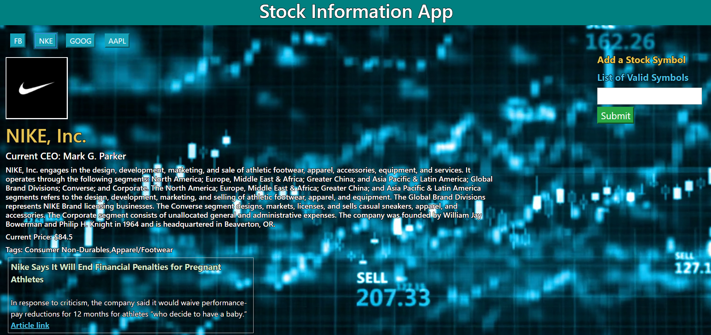
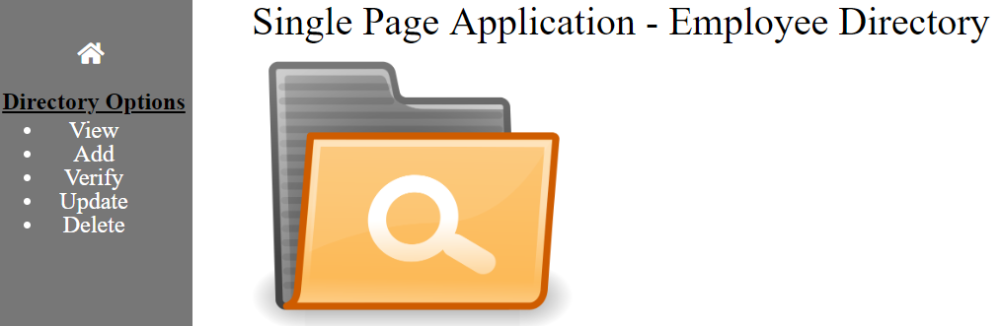

About
I am an aspiring Web Developer looking to contribute to the creation of innovative apps. I recently graduated from the Full Stack Web Development Boot Camp at Georgia Tech in Spring 2019. Concidentally, this wasn't my first trip to Georgia Tech, as it was where I received my Bachelor's in Industrial Engineering.
My decision to go to Georgia Tech for my Undergrad was a fairly simple one. All my life I've tried doing things the "best" or "optimal" way. I would visualize things from a big picture point of view to save time, resources, anything really. The mantra of an Industrial Engineer is efficiency and that's how my journey led me to the Georgia Institute of Technology.
Years after graduating at Georgia Tech, I was working at UPS as an Industrial Engineer. I was trained to use SQL to query data necessary for reports. Naturally, learning and using SQL led to other languages, such as VBA and JavaScript. This piqued my interest to learn coding and possibly change my career path. The biggest source of support came from my brother who believed I could become a great developer; he pushed me to pursue my goal and in 2019, I made the leap and enrolled at Georgia Tech once again.
From HTML to JavaScript. From JavaScript to MySQL. I learned and developed these skills and much more during the GT Boot Camp. But no matter where I end up, my biggest takeaway from this experience is that even when facing failure, I know I can overcome any problem with hard work and determination.
When I'm not coding, I try to stay active by playing basketball at the gym or football in the park. Bowling is another sport I like to play. A big passion of mine is movies, so I like to watch as many as I can, modern or classic.
Projects
The Last Developer
This web game was our final project of our Boot Camp and my personal favorite. My group and I drew inspiration from a multitude of our passions, ranging from games and tv shows. The purpose of the game is to explore the world and learn from the four different towns. These towns teach you basic information about HTML, CSS, React and JavaScript. We wanted to share what we learned, literally, and be able to teach beginners through an interactive Role-Playing game.
The game's characters, dialogues and other properties were completely driven from our unique database, built with MongoDB. We created the world using React and used Redux to make our sprite character move and interact with other characters.
Link to App GitHub RepoSuper Trivia Bros.
Super Trivia Bros. is a blend of new school and old school. Trivia is very popular at bars, restaurants, and other social gatherings. Our goal was to present this fun activity in a way that would resonate with people who love retro arcade games.
Our trivia database was sourced from Open Trivia database, used in Mongo. The arcade elements we implemented into the game were varying difficulties (number of lives) and high score pages.
Link to App GitHub RepoBamazon
Bamazon is an online store I created, inspired from Amazon. Of course, if I had a store, I would sell something I love, so Bamazon sells movies! The simple database was created using MySQL. The user can place movies into their cart and then check out. Once they do, the page will be updated and show the new inventory count. There is also a manager view which has more features including viewing low inventory, adding stock and adding a new product to inventory.
Link to App GitHub RepoStock Information App
The Stock Information App can be used to retrieve current information on a company. The app makes two API calls: one for stock information and the other for news information. The API sources are the IEX trading API and NY Times API. The front end is built with jQuery.
Link to App GitHub RepoSingle Page Application
This was my first application using a single page. The process was simply using jQuery to toggle the display style property on and off. The app is an employee directory that allows the user to view the current employees, add, update and delete employees. The application does not have a persistent database.
Link to App GitHub Repo